📌 Chapter snapshot
- Chapter 5 of NCERT Class 10 Science (reprint 2026-27), the longest biology chapter (21 pages). It is in Unit II “World of Living”, which carries 25 marks in the 80-mark theory paper with Control and Coordination, How do Organisms Reproduce? and Heredity.
- Asked every year: MCQs on enzymes (salivary amylase, trypsin, lipase), pathways of respiration, stomata; 2–3 mark questions on digestion, alveoli, double circulation, xylem and phloem, nephron; and case studies on photosynthesis (2025) and the kidney (2024).
- Diagrams to practise: alimentary canal (Fig. 5.6), respiratory system (5.9), heart (5.10), nephron (5.14), excretory system (5.13), stomata (5.3), leaf section (5.1).
What are life processes?
How do we know something is alive? We usually look for movement: breathing, growing, walking. But a plant that is not visibly growing is still alive, so visible movement alone is not enough.
- Biologists say living things always show molecular movement (molecules moving inside cells), even when asleep.
- Viruses show no molecular movement until they infect a cell. That is partly why there is a controversy about whether they are truly alive.
- Living bodies are highly organised (cells → tissues → organs). The environment keeps breaking this order down, so organisms must keep repairing and maintaining their structures, all the time.
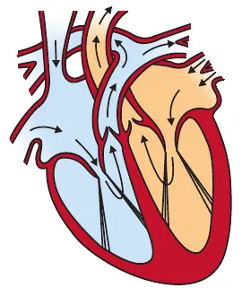
The processes which together perform this maintenance job are called life processes. They must go on even when we are just sitting in class or asleep.
🍎 Nutrition
Taking in food (a source of energy and raw material) from outside. Food is mostly carbon-based.
🫁 Respiration
Taking in oxygen and using it to break down food (oxidation–reduction reactions) to release energy for the cell.
❤️ Transportation
Carrying food and oxygen from the place they are taken in to every cell, and wastes away.
🚽 Excretion
Removing the harmful by-products of chemical reactions from the body.
🌱 Growth needs
If the body is to grow, extra raw material is also needed from outside.
⚡ Energy
All maintenance needs energy, which comes from outside the organism (food).
Why do big organisms need special organs?
- In a single-celled organism the whole surface touches the environment, so food intake, gas exchange and waste removal happen over the entire surface by diffusion.
- In multicellular organisms, most cells are deep inside, not in direct contact with the surroundings. Simple diffusion will not meet the needs of all the cells.
- So specialised tissues take in food and oxygen at one place, and a transport system carries them everywhere. Wastes need a specialised excretory tissue too.
🧊 Try it: why diffusion fails in big bodies
Imagine the organism is a cube. Make it bigger and watch what happens to the surface available for each unit of volume, and to the time oxygen needs to diffuse to the centre (diffusion time grows with the square of the distance).
⭐ Exam line
Diffusion is insufficient in multicellular organisms like humans because the body is large, most cells are not in contact with the air, and diffusion over long distances is far too slow (oxygen would take about 3 years to diffuse from lungs to toes, says NCERT). So we need lungs, blood, haemoglobin and a heart.
Nutrition: autotrophic nutrition
We need energy even when we do nothing, just to maintain order in the body. We also need materials to grow, develop and make proteins. Food supplies both. Organisms get food in two broad ways:
Autotrophs (auto = self)
Heterotrophs (hetero = other)
Photosynthesis
Photosynthesis is the process by which autotrophs take in carbon dioxide and water and convert them into carbohydrates in the presence of sunlight and chlorophyll.
- Carbohydrates are used for energy. Those not used immediately are stored as starch, the plant's internal energy reserve.
- Similarly, animals store some energy as glycogen. (CBSE 2023: plants store starch, animals glycogen.)
Three events of photosynthesis (learn in order)
- Absorption of light energy by chlorophyll.
- Conversion of light energy to chemical energy and splitting of water molecules into hydrogen and oxygen.
- Reduction of carbon dioxide to carbohydrates.
🌵 Desert plants are different
These steps need not happen one after another immediately. Desert plants take up CO2 at night (when it is cool, so opening stomata loses less water) and make an intermediate. During the day, the energy absorbed by chlorophyll acts on this intermediate. (Asked in CBSE 2023 and 2025.)
Where does it happen? The leaf (Fig. 5.1)
- In a cross-section of a leaf, some cells contain green dots: chloroplasts, which contain chlorophyll.
- Look for: waxy cuticle, upper epidermis, cells packed with chloroplasts, air spaces, lower epidermis with guard cells around stomata, and the vascular bundle (xylem and phloem) in the veins.
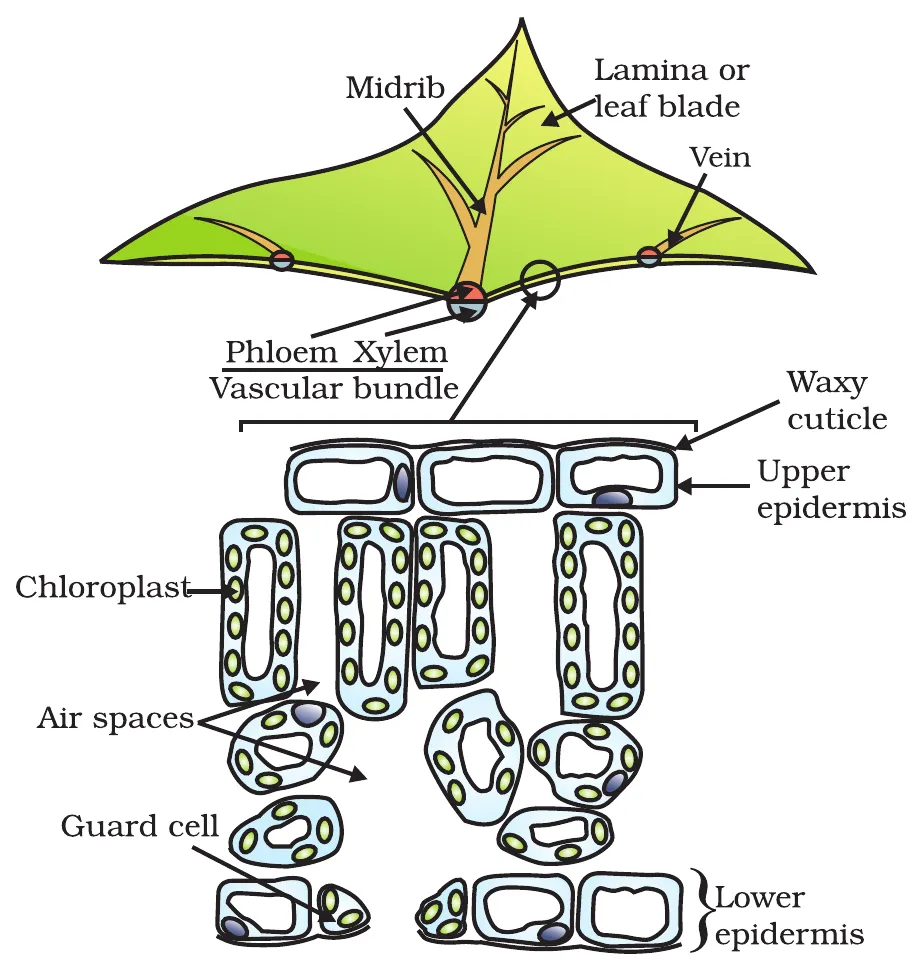
Is chlorophyll essential? Activity 5.1
- Take a plant with variegated leaves (green and white patches), e.g. money plant or croton.
- Keep it in a dark room for 3 days so all the starch is used up (destarching).
- Keep it in sunlight for about 6 hours. Pluck a leaf and trace its green areas.
- Dip the leaf in boiling water (kills cells, softens it), then boil in alcohol on a water-bath: the leaf turns pale and the alcohol turns green (chlorophyll dissolves out).
- Dip it in dilute iodine, rinse and compare with the tracing.
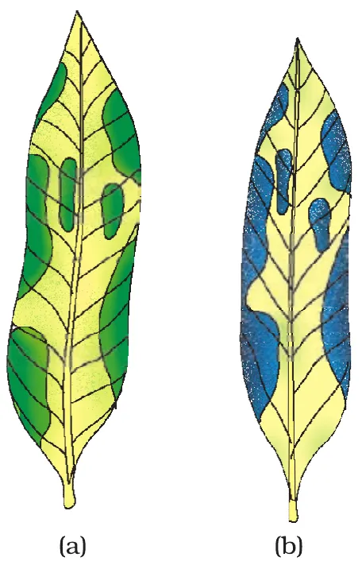
⭐ Result and conclusion
Only the parts that were green turn blue-black with iodine (starch present). The white parts stay brown (no starch). So chlorophyll is essential for photosynthesis. Alcohol is heated on a water-bath, never directly, because it catches fire easily.
How does the plant get CO2? Stomata (Fig. 5.3)
- Stomata are tiny pores on the surface of leaves. Massive gas exchange for photosynthesis takes place through them. (Gas exchange also happens across the surface of stems, roots and leaves.)
- Large amounts of water are lost through stomata too, so the plant closes them when it does not need CO2.
- Opening and closing is done by the two guard cells: when water flows into them they swell and the pore opens; when they shrink, the pore closes.
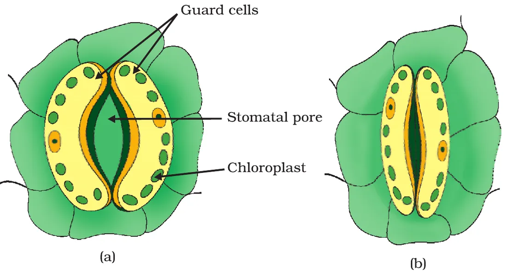
💧 Try it: open and close a stoma
Move the slider to let water into the guard cells (turgid) or out of them (flaccid).
Is CO2 essential? Activity 5.2
- Two similar potted plants, destarched (3 days in the dark).
- Each is placed on a glass plate under a bell-jar, sealed with vaseline to make it air-tight.
- Jar (a) has a watch-glass of potassium hydroxide (KOH), which absorbs CO2. Jar (b) has no KOH.
- After about 2 hours in sunlight, test a leaf from each for starch.
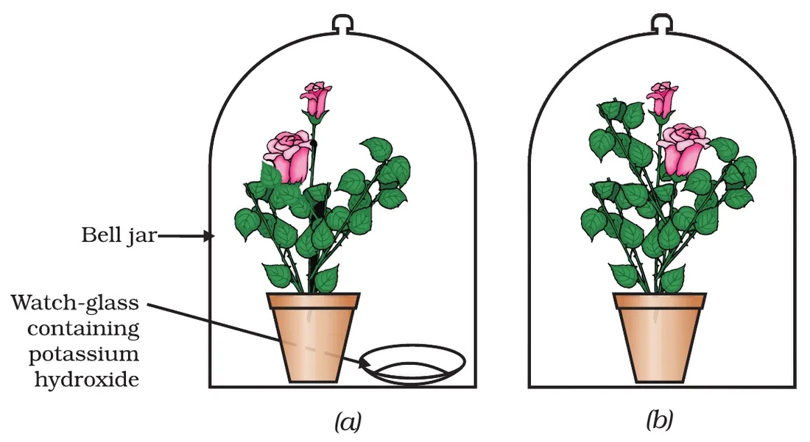
⭐ Result and conclusion
The leaf from jar (a) shows no starch (stays brown): KOH removed the CO2. The leaf from jar (b) turns blue-black. So carbon dioxide is essential for photosynthesis.
🔬 Photosynthesis lab: run all three experiments
The plant has been destarched. Choose the conditions, then do the iodine test. This also answers NCERT's question “can we design an experiment to show that sunlight is essential?” (cover part of a leaf with black paper).
Other raw materials
- Water is taken up from the soil by the roots.
- Nitrogen, phosphorus, iron, magnesium are also taken from the soil. Nitrogen is needed to make proteins; it is taken as inorganic nitrates or nitrites, or as organic compounds made by bacteria from atmospheric nitrogen.
- CO2 comes from the air through stomata; sunlight from the Sun; chlorophyll is in the chloroplasts.
Heterotrophic nutrition
Each organism is adapted to its environment. Food may be stationary (grass for a cow) or mobile (a deer for a lion), so the nutritive apparatus differs. There is a range of strategies:
| Strategy | How food is taken | Examples (NCERT) |
|---|---|---|
| Saprophytic | Break down food outside the body, then absorb it | Fungi: bread mould, yeast, mushrooms |
| Holozoic | Take in whole material and break it down inside the body | Amoeba, humans, most animals |
| Parasitic | Get nutrition from plants or animals (hosts) without killing them | Cuscuta (amar-bel), ticks, lice, leeches, tapeworms |
The names “saprophytic” and “holozoic” are not printed in this NCERT chapter but are widely used; NCERT itself names “parasitic”.
5.2.3 How do organisms obtain their nutrition?
- In single-celled organisms, food may be taken in by the entire surface.
- Amoeba (Fig. 5.5): (a) senses a food particle; (b) puts out temporary finger-like extensions of the cell surface, pseudopodia; (c) these fuse over the food, forming a food vacuole; complex substances are broken down inside it and diffuse into the cytoplasm; (d) the undigested material moves to the surface and is thrown out.
- Paramoecium has a definite shape, and food is taken in at a specific spot. Food is moved to this spot by cilia, which cover the whole cell surface.
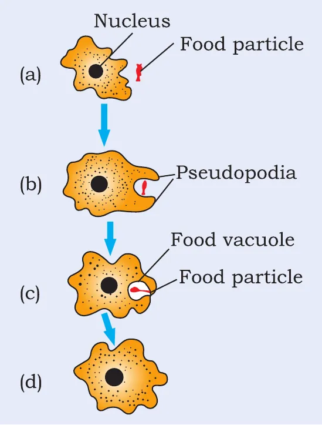
🧠 Memory trick for Amoeba: “I D A A E”
Ingestion (pseudopodia engulf) → Digestion (in food vacuole) → Absorption (into cytoplasm) → Assimilation (used by the cell) → Egestion (waste thrown out). CBSE 2024 asked how Amoeba takes in and digests food.
Nutrition in human beings
The alimentary canal is a long tube from the mouth to the anus. Each region is specialised for a different job.
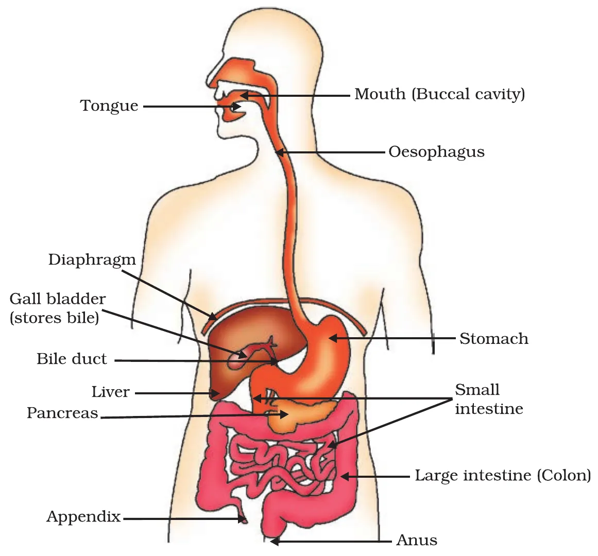
Mouth: teeth, saliva and tongue
- Food is crushed by teeth into small particles of the same texture.
- Food is wetted by saliva from the salivary glands to make its passage smooth. (Mouth “waters” when we see food we like.)
- Saliva contains the enzyme salivary amylase, which breaks down starch (complex) into simple sugar.
- The muscular tongue mixes food with saliva while chewing.
Activity 5.3: Starch solution in tubes A (with saliva) and B (without). After 20–30 min, add iodine. What happens?
Peristalsis and the oesophagus
- The lining of the canal has muscles that contract rhythmically to push food forward: peristaltic movements, all along the gut.
- Food goes from the mouth to the stomach through the food-pipe (oesophagus).
Stomach
- A large organ that expands when food enters. Its muscular walls mix food with digestive juices.
- Gastric glands in its wall release three things:
- Hydrochloric acid: creates an acidic medium that helps the enzyme pepsin act (it also kills germs in the food).
- Pepsin: a protein-digesting enzyme.
- Mucus: protects the inner lining of the stomach from the acid.
- Too much acid causes “acidity”.
- Exit of food from the stomach is controlled by a sphincter muscle, which releases it in small amounts into the small intestine.
Small intestine: where digestion is completed
- The longest part of the canal, fitted into a small space by extensive coiling.
- Its length depends on diet: herbivores eating grass need a longer small intestine to digest cellulose; carnivores like tigers have a shorter one, as meat is easier to digest.
- It is the site of complete digestion of carbohydrates, proteins and fats. It receives secretions of the liver and pancreas.
- Bile juice (from the liver, stored in the gall bladder) makes the acidic food from the stomach alkaline so pancreatic enzymes can act. Bile salts break large fat globules into smaller ones (emulsification), like soap on dirt, which helps enzymes act.
- Pancreatic juice contains trypsin (digests proteins) and lipase (breaks down emulsified fats). (CBSE 2026 MCQ.)
- Intestinal juice from glands in the wall finally converts proteins → amino acids, complex carbohydrates → glucose, fats → fatty acids and glycerol. (CBSE 2024 MCQ.)
- Digested food is absorbed by the walls. The inner lining has numerous finger-like villi, which increase the surface area for absorption and are richly supplied with blood vessels that carry food to every cell.
Large intestine
- Unabsorbed food enters the large intestine, where its walls absorb more water.
- The rest is removed through the anus; its exit is regulated by the anal sphincter.
🍛 Try it: follow your food
Pick a nutrient, then step through the alimentary canal to see what happens to it at each stop.
Digestive juices at a glance
| Gland / organ | Juice | Contains | Action |
|---|---|---|---|
| Salivary glands | Saliva | Salivary amylase | Starch → simple sugar |
| Gastric glands (stomach) | Gastric juice | HCl, pepsin, mucus | Acid medium; proteins digested by pepsin; mucus protects lining |
| Liver | Bile | Bile salts (no enzyme) | Makes food alkaline; emulsifies fats |
| Pancreas | Pancreatic juice | Trypsin, lipase | Proteins digested; emulsified fats broken down |
| Intestinal glands | Intestinal juice | Enzymes | Final conversion to amino acids, glucose, fatty acids and glycerol |
The pancreas also makes amylase for starch; this is extra information not in the NCERT text.
🦷 More to know: dental caries
Tooth decay is the gradual softening of enamel and dentine. Bacteria acting on sugars produce acids that demineralise enamel. Masses of bacteria and food particles stick to teeth as dental plaque; saliva cannot reach the tooth surface to neutralise the acid. Brushing after eating removes plaque before acids are made. If untreated, microbes may invade the pulp, causing inflammation and infection.
Respiration
Activity 5.4: Blow exhaled air into lime water, and pump ordinary air into lime water with a pichkari. Which turns milky faster?
Activity 5.5: Yeast in sugar solution, with the gas led into lime water. What happens?
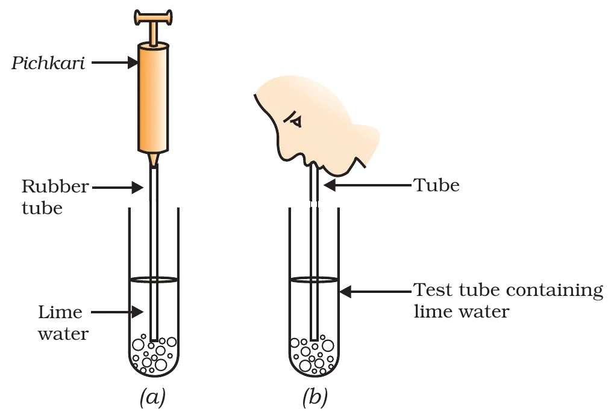
Food is used in cells to release energy. This is cellular respiration. In all organisms the first step is the same:
What happens to pyruvate next depends on oxygen:
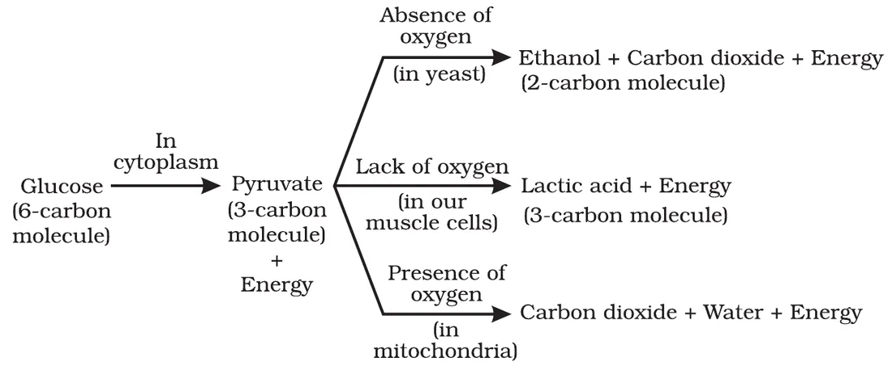
🍺 Anaerobic (yeast)
No oxygen. Pyruvate → ethanol + CO2 + energy. Called fermentation. Ethanol is 2-carbon.
🏃 Lack of oxygen (muscles)
During sudden heavy exercise. Pyruvate → lactic acid (3-carbon) + energy. Build-up of lactic acid causes cramps.
🔋 Aerobic (mitochondria)
Oxygen present. Pyruvate → 3 CO2 + water + energy, in mitochondria. Releases much more energy.
⚡ Try it: choose the oxygen supply
Pick where the respiration is happening. The highlighted path shows the products, and the bar compares the energy (as ATP) made from one glucose.
🔋 More to know: ATP, the energy currency
Energy released in respiration is used immediately to make ATP (adenosine triphosphate) from ADP + inorganic phosphate (Pi):
ADP + Pi —(energy)→ ATP
When the terminal phosphate bond of ATP is broken using water, 30.5 kJ/mol of energy is released. Like a battery, ATP is used for muscle contraction, protein synthesis, conduction of nerve impulses and much more. It drives the endothermic reactions of the cell.
Gas exchange in plants
- Plants exchange gases through stomata, and large inter-cellular spaces keep all cells in contact with air. CO2 and O2 move by diffusion.
- The direction depends on environmental conditions and the requirements of the plant (CBSE 2023).
🌞🌙 Try it: day and night in a leaf
Breathing in water and on land
- Aquatic animals use oxygen dissolved in water. Dissolved oxygen is fairly low compared with air, so their breathing rate is much faster than that of land animals.
- Fishes take in water through the mouth and force it past the gills, where blood takes up the dissolved oxygen.
- Land animals breathe oxygen from the atmosphere. All breathing organs have a large surface area, a very thin, delicate surface, are placed inside the body for protection, and have passages and a mechanism to move air in and out.
⏱️ Activity 5.6 helper: count breaths in a minute
Press Start, then tap “Breath” every time you (or the fish you are watching) breathe in. After 60 seconds you get the rate per minute.
The human respiratory system
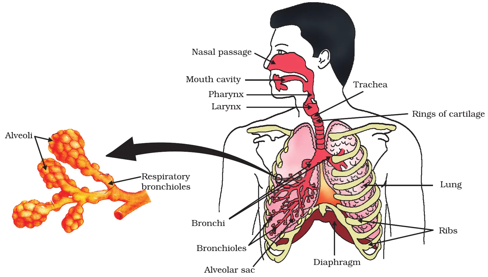
The path of air (learn this flow)
- Nostrils: air filtered by fine hairs and mucus
- Pharynx (throat) and larynx
- Trachea: rings of cartilage stop the air passage from collapsing
- Bronchi → bronchioles (smaller and smaller tubes)
- Alveoli: balloon-like sacs where gases are exchanged
- The walls of the alveoli have an extensive network of blood vessels.
- Breathing in: we lift our ribs and flatten the diaphragm, so the chest cavity becomes larger; air is sucked into the lungs and fills the expanded alveoli.
- Blood brings CO2 from the body for release into the alveoli; oxygen in the alveolar air is taken up by blood and carried to all cells.
- The lungs always contain a residual volume of air, so there is enough time for O2 to be absorbed and CO2 released.
🫁 Try it: breathe in, breathe out
Watch the ribs and diaphragm. The diaphragm is the dome-shaped muscle sheet below the lungs (CBSE 2026 asked where it is and what it does).
Transport of gases
- In large animals, diffusion pressure alone cannot deliver oxygen to all parts. Respiratory pigments take up oxygen in the lungs and release it in oxygen-deficient tissues.
- In humans the pigment is haemoglobin, present in red blood corpuscles, with a very high affinity for oxygen. (CBSE 2026: not for CO2!)
- CO2 is more soluble in water than oxygen, so it is mostly transported dissolved in blood (plasma).
📏 80 m²
Area of the alveolar surface if spread out, about 40 times the surface of your skin (which is roughly 2 m²).
⏳ 3 years
Time oxygen would take to diffuse from the lungs to the toes without haemoglobin and blood flow.
🚭 Do you know? Smoking and tobacco
The upper respiratory tract has hair-like cilia that remove germs, dust and particles from inhaled air. Smoking destroys these cilia, so germs, smoke and chemicals enter the lungs, causing infection, cough and even lung cancer. Tobacco in any form (cigarettes, bidis, hookah, gutkha) harms the tongue, lungs, heart and liver; India has a high rate of oral cancer from chewing gutkha. Just say NO to tobacco.
Transportation in human beings
Blood
- Blood is a fluid connective tissue: a fluid medium, plasma, with cells suspended in it.
- Plasma carries food, CO2 and nitrogenous wastes in dissolved form, plus salts. Red blood corpuscles carry oxygen.
- So we need: a pump (heart), a network of tubes (blood vessels), and a repair system (platelets).
Activity 5.7: Find out the normal haemoglobin range in humans and in cattle. Is it different in men, women and children?
Our pump: the heart (Fig. 5.10)
- A muscular organ about the size of our fist.
- Has four chambers so that oxygen-rich blood does not mix with CO2-rich blood.
- Atria (upper chambers) are thin-walled: they only collect blood. Ventricles (lower) have thicker muscular walls because they pump blood to other organs.
- The septum separates the right and left sides.
- Valves stop blood flowing backwards when atria or ventricles contract.
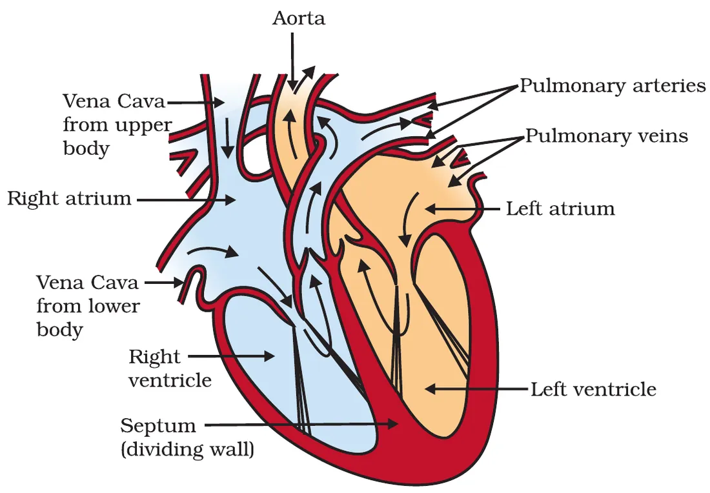
🧠 Memory trick
Arteries carry blood Away from the heart. Veins bring blood back (V for “visit home”). Exception pair: the pulmonary artery carries deoxygenated blood (to the lungs) and the pulmonary vein carries oxygenated blood (from the lungs). CBSE 2023 asked about the vena cava and pulmonary artery.
Step by step: double circulation (Fig. 5.11)
- Oxygen-rich blood from the lungs comes by the pulmonary veins to the left atrium, which relaxes while collecting it.
- Left atrium contracts; the left ventricle relaxes and receives the blood.
- The muscular left ventricle contracts and pumps blood through the aorta to the body.
- Deoxygenated blood from the body comes by the vena cava to the right atrium.
- Right atrium contracts; the right ventricle dilates and receives it.
- Right ventricle pumps it through the pulmonary artery to the lungs for oxygenation.
Blood passes through the heart twice in each complete cycle (heart → lungs → heart → body → heart). This is double circulation.
❤️ Try it: follow one drop of blood
Press Next to move the drop. Blue = deoxygenated, red = oxygenated. Count how many times it passes through the heart.
Why separate oxygenated and deoxygenated blood?
- Separation gives a highly efficient supply of oxygen to the body.
- This is useful in animals with high energy needs, like birds and mammals, which constantly use energy to maintain body temperature (warm-blooded).
| Animal | Chambers | Mixing of blood? | Circulation |
|---|---|---|---|
| Fishes | 2 | Only deoxygenated blood passes through the heart | Single: heart → gills → body |
| Amphibians, many reptiles | 3 | Some mixing tolerated | Double (incomplete) |
| Birds, mammals | 4 | No mixing | Double (complete) |
Amphibians and reptiles do not use energy to keep warm: their body temperature depends on the surroundings (cold-blooded).
🩺 More to know: blood pressure
- Blood pressure is the force that blood exerts against the wall of a vessel. It is much greater in arteries than in veins.
- Systolic pressure: in the artery during ventricular contraction (normal about 120 mm Hg). Diastolic pressure: during ventricular relaxation (normal about 80 mm Hg).
- Measured with a sphygmomanometer.
- High blood pressure is hypertension, caused by constriction of arterioles, which increases resistance to blood flow. It can lead to the rupture of an artery and internal bleeding.
📟 Try it: read a BP reading
Type a reading as written by a doctor, e.g. 120/80. (A learning aid only: only a doctor can diagnose blood pressure.)
The tubes: blood vessels
| Arteries | Veins | Capillaries |
|---|---|---|
| Carry blood away from the heart to organs | Bring blood back to the heart | Connect arteries and veins inside organs |
| Thick, elastic walls (blood is under high pressure) | Thin walls (blood no longer under pressure) | Walls only one cell thick |
| No valves | Have valves so blood flows one way | Exchange of materials with cells happens here |
| Usually oxygenated blood (except pulmonary artery) | Usually deoxygenated (except pulmonary vein) | Join to form veins |
🩹 Maintenance by platelets
If a vessel leaks, blood is lost and pressure falls, reducing the pumping efficiency. Platelets circulate and plug leaks by helping blood to clot at the injury. (CBSE 2025.)
💧 Lymph (tissue fluid)
Some plasma, proteins and blood cells escape through pores in capillaries into tissue spaces: this is lymph. It is like plasma but colourless with less protein. It drains into lymphatic capillaries → lymph vessels → large veins. Lymph carries digested fat from the intestine and drains excess fluid back into the blood.
Transportation in plants
- Leaves make food; roots take in water and minerals from the soil. If these are far apart (tall plants), diffusion is not enough, so a transport system is essential.
- Plants do not move and have many dead cells, so they have low energy needs and use relatively slow transport systems (CBSE 2025). But distances can be very large, as in tall trees.
- Two independent conducting tubes: xylem moves water and minerals from the soil; phloem moves products of photosynthesis from leaves to other parts.
Transport of water
- In xylem, vessels and tracheids of roots, stems and leaves are interconnected into a continuous water channel.
- Root cells in contact with soil actively take up ions. This creates a concentration difference between root and soil.
- Water moves into the root to remove this difference: a steady movement into root xylem pushes a column of water upwards (root pressure).
- Root pressure alone cannot lift water up tall trees. Evaporation of water from leaf cells creates a suction that pulls water up from the root xylem: transpiration pull.
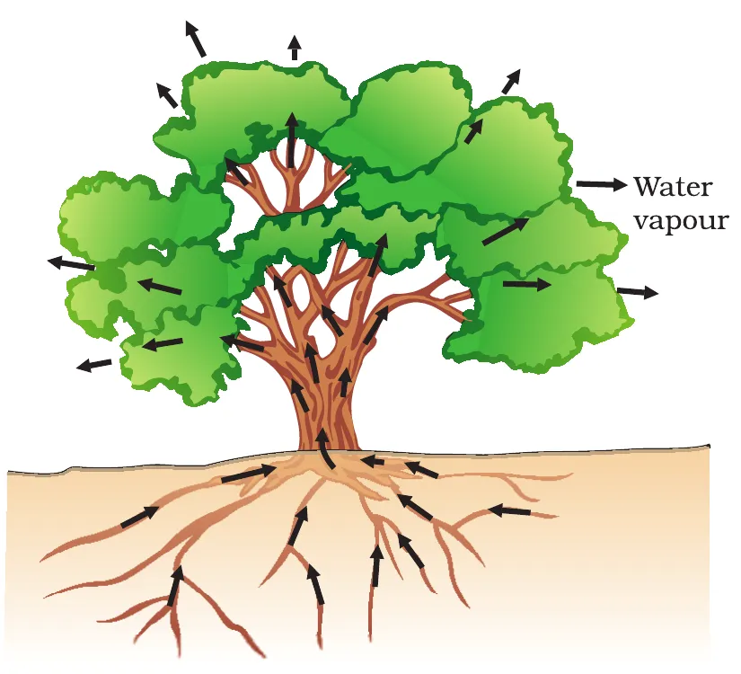
Transpiration is the loss of water as vapour from the aerial parts of a plant. It helps absorption and upward movement of water and dissolved minerals, and helps in temperature regulation.
⭐ Root pressure vs transpiration pull
Root pressure is more important at night. During the day, when stomata are open, transpiration pull is the major driving force for water in the xylem.
Activity 5.8: A potted plant and a stick, both covered with plastic sheets in sunlight for half an hour. Any difference?
🌳 Try it: what lifts the water?
Change the time of day and the sunlight. See which force does most of the work and how fast water rises.
Transport of food: translocation
- Transport of soluble products of photosynthesis is called translocation. It occurs in phloem.
- Phloem also carries amino acids and other substances, especially to storage organs (roots, fruits, seeds) and growing organs.
- It happens in sieve tubes with the help of adjacent companion cells, in both upward and downward directions.
- Unlike xylem, phloem transport uses energy: material like sucrose is loaded into phloem using ATP. This raises the osmotic pressure, water moves in, and the pressure pushes material to tissues with less pressure.
- So phloem moves material according to the plant's needs: in spring, sugar stored in root or stem is sent to the buds, which need energy to grow.
Excretion
Excretion is the biological process of removing harmful metabolic wastes, especially nitrogenous wastes, from the body. Many unicellular organisms simply let wastes diffuse from the body surface into the surrounding water.
5.5.1 Excretion in human beings
- Organs: a pair of kidneys, a pair of ureters, a urinary bladder and a urethra.
- Kidneys lie in the abdomen, one on either side of the backbone.
- Urine made in the kidneys → ureters → urinary bladder (stored) → released through the urethra.
- The purpose of making urine is to filter out waste such as urea or uric acid from the blood, just as CO2 is removed in the lungs.
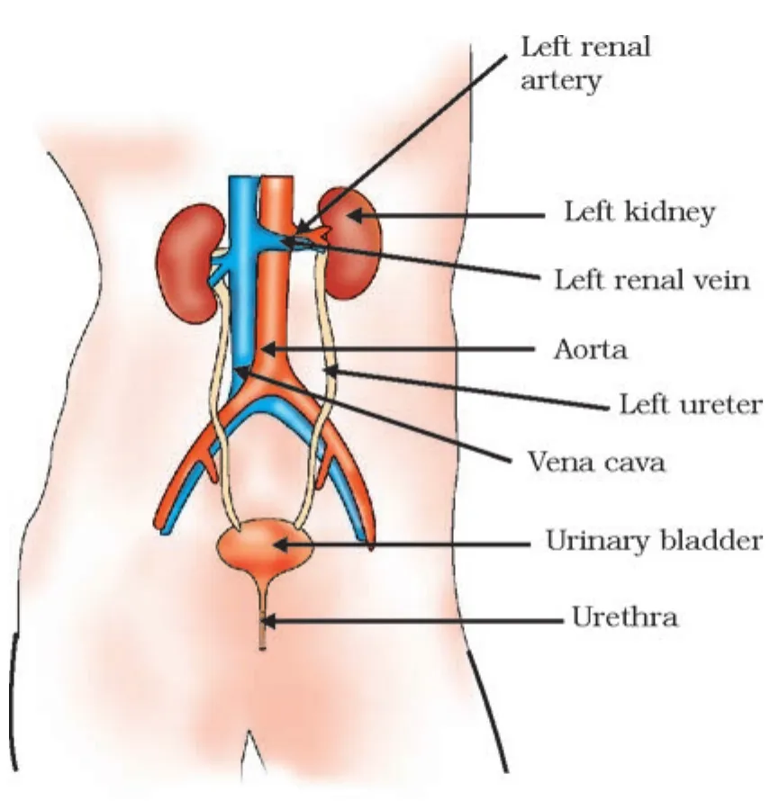
The nephron: the filtration unit (Fig. 5.14)
- Each kidney has large numbers of filtration units called nephrons, packed close together.
- Like the lungs, the basic filter is a cluster of very thin-walled capillaries, the glomerulus.
- It sits in the cup-shaped end of a coiled tube, Bowman's capsule, which collects the filtrate.
- As filtrate flows along the tubular part, useful substances such as glucose, amino acids, salts and a major amount of water are selectively re-absorbed into the surrounding capillaries.
- Urine from each kidney enters a long tube, the ureter, to the bladder.
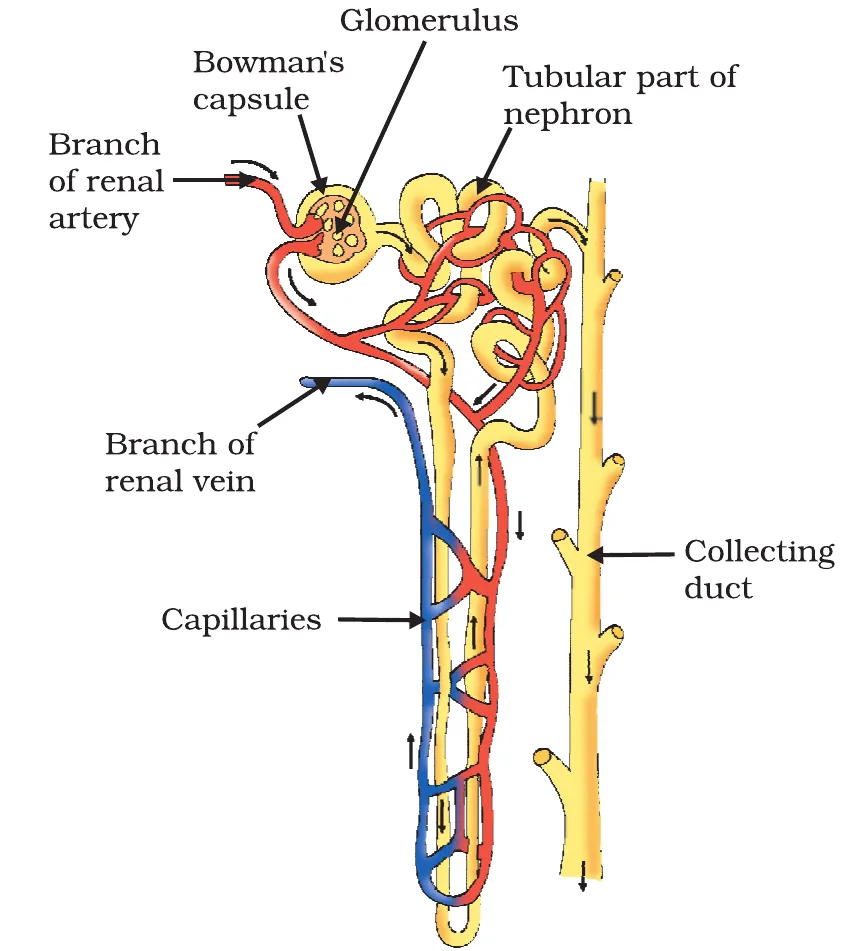
📌 How is the amount of urine regulated?
The amount of water re-absorbed depends on (1) how much excess water there is in the body, and (2) how much dissolved waste has to be excreted. Drink a lot of water → less is re-absorbed → more, dilute urine. Hot day, lots of sweating → more re-absorbed → less, concentrated urine. (CBSE 2024 case question.)
- The urinary bladder is muscular and under nervous control, so we can usually control the urge to urinate.
🫘 Try it: be the kidney
Change how much water you drink and the weather. The kidneys filter about 180 litres a day but you pass only a litre or two. See how much is re-absorbed.
🩸 More to know: artificial kidney (haemodialysis)
- Infections, injury or restricted blood flow can reduce kidney activity; poisonous wastes build up and can cause death.
- An artificial kidney removes nitrogenous wastes from blood by dialysis.
- It has tubes with a semi-permeable lining in a tank of dialysing fluid, which has the same osmotic pressure as blood but no nitrogenous wastes.
- Blood passes through the tubes; wastes diffuse into the fluid; purified blood is pumped back.
- Difference from a kidney: no re-absorption. A healthy kidney filters about 180 L daily but only 1–2 L is excreted.
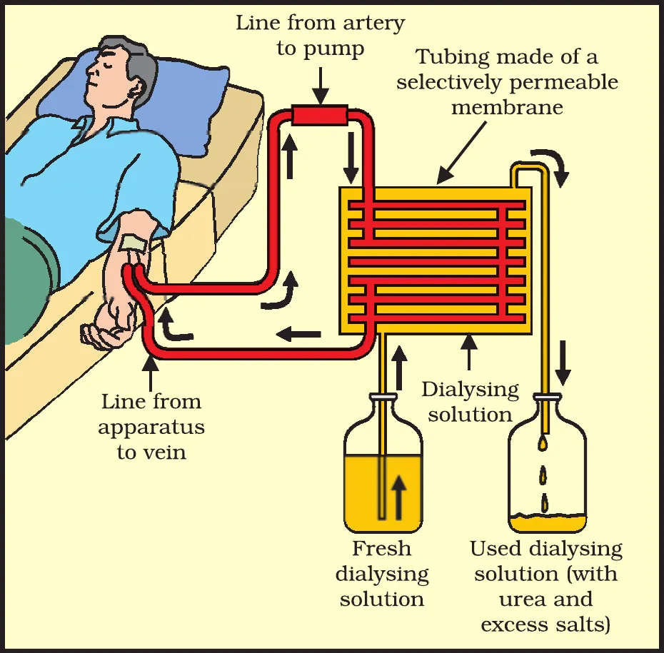
🤝 Think it over: organ donation
Donating an organ to a person whose organ has failed is a generous act, done with the consent of the donor and family. Anyone, of any age or gender, can be a donor. Common transplants: corneas, kidneys, heart, liver, pancreas, lungs, intestines, bone marrow. Most donations happen after death or brain death, but a kidney, part of a liver, lung and some tissues can be donated while alive.
5.5.2 Excretion in plants
Plants use completely different strategies:
🌬️ Gases
Oxygen from photosynthesis is itself a waste product; O2 and CO2 leave by diffusion through stomata.
💦 Excess water
Removed by transpiration.
🍂 Falling leaves
Wastes are stored in leaves that fall off; plants can lose parts because many tissues are dead cells.
🫙 Vacuoles
Many wastes are stored in cellular vacuoles.
🌲 Resins and gums
Stored especially in old xylem.
🌍 Into the soil
Some wastes are excreted into the soil around the roots.
Differences to learn (2- and 3-mark favourites)
Autotrophic vs heterotrophic nutrition
| Autotrophic | Heterotrophic |
|---|---|
| Organism makes its own food | Organism depends on food made by others |
| Raw materials: simple inorganic (CO2, water) | Takes in complex organic substances |
| Needs sunlight and chlorophyll | Needs enzymes to break food down |
| Green plants, some bacteria | Animals, fungi |
Aerobic vs anaerobic respiration
| Aerobic | Anaerobic |
|---|---|
| Uses oxygen | Without oxygen |
| Pyruvate broken down in mitochondria | Pyruvate broken down in cytoplasm |
| Products: CO2 + water + energy | Ethanol + CO2 (yeast) or lactic acid (muscle) + energy |
| Much more energy released | Much less energy |
| Humans, most plants and animals | Yeast, some bacteria, our muscle cells during heavy exercise |
Breathing vs respiration
| Breathing | (Cellular) respiration |
|---|---|
| Physical process: taking air in and out of the lungs | Chemical process: breaking down food to release energy |
| Happens in the respiratory organs | Happens in every cell (cytoplasm and mitochondria) |
| No energy is released | Energy released and stored as ATP |
Xylem vs phloem (NCERT Exercise 12)
| Xylem | Phloem |
|---|---|
| Carries water and minerals | Carries food (sugars, amino acids) |
| From roots to leaves: upward only | From leaves to other parts: both upward and downward |
| Explained largely by physical forces (root pressure, transpiration pull); no energy used | Uses energy from ATP (osmotic pressure) |
| Through vessels and tracheids (mostly dead cells) | Through sieve tubes with companion cells (living) |
Transpiration vs translocation
| Transpiration | Translocation |
|---|---|
| Loss of water vapour from aerial parts | Transport of soluble food in the plant |
| Through stomata (mainly) | Through phloem |
| Creates the pull for water in xylem; cools the plant | Supplies food to storage and growing organs |
Blood vs lymph
| Blood | Lymph |
|---|---|
| Red (has RBCs with haemoglobin) | Colourless |
| More protein | Less protein |
| Flows in arteries, veins, capillaries, pumped by the heart | Flows in lymph vessels, drains into large veins |
| Carries oxygen, food, CO2, wastes | Carries digested fat; drains excess tissue fluid |
Alveoli vs nephrons (NCERT Exercise 13)
| Alveoli (lungs) | Nephrons (kidneys) | |
|---|---|---|
| Structure | Tiny balloon-like sacs at the ends of bronchioles | Coiled tubes with a cup-shaped Bowman's capsule at one end |
| Capillaries | Network of capillaries in the alveolar walls | Glomerulus (capillary cluster) in Bowman's capsule, capillaries around the tubule |
| Number | Millions; surface about 80 m² | Large numbers in each kidney |
| Function | Exchange of gases: O2 into blood, CO2 out | Filter nitrogenous waste (urea) from blood and re-absorb useful substances |
| Process | Diffusion | Filtration and selective re-absorption |
| Common feature | Both have very thin walls, a huge surface area and a rich supply of blood capillaries. | |
Nephron vs neuron (CBSE 2026)
| Nephron | Neuron |
|---|---|
| Structural and functional unit of the kidney | Structural and functional unit of the nervous system |
| Filters blood to form urine | Carries messages (nerve impulses) |
Haemodialysis vs natural kidney
| Artificial kidney | Natural kidney |
|---|---|
| Wastes removed by diffusion through a semi-permeable tube | Filtration in the glomerulus |
| No re-absorption | Selective re-absorption of glucose, amino acids, salts, water |
| Machine, used outside the body for some hours | Works all the time inside the body |
Diagrams for the exam
Tap any diagram to open it full size. Practise drawing each one with all its labels; board papers often ask you to draw and label one of these for 2 to 5 marks.
✏️ Drawing tips that save marks
- Use a pencil, draw label lines with a ruler, keep labels on one side and do not let lines cross.
- Heart: draw the left ventricle wall the thickest; show the septum; label all four chambers and four vessels (aorta, pulmonary artery, pulmonary veins, vena cava).
- Nephron: glomerulus inside Bowman's capsule, coiled tubule, capillaries around it, collecting duct.
- Write the figure title below the diagram.
Previous year board questions
These questions come from the CBSE Class 10 Science board papers of the years shown, with the paper code (set) and marks. Tap a question to see a model answer.
Where we could not check a question word for word (for example its options or its case text), it is reworded and marked so. The years, sets and marks shown are only those we could confirm from the paper or a published solution of it.
2026 · 31/1/1 · 1 markWhich structure in a leaf is mainly responsible for gaseous exchange? (a) Xylem (b) Stomata (c) Phloem (d) Cuticle
2026 · 31/1/1 · 1 markPancreas secretes pancreatic juice which contains certain enzymes that help in digestion of food. Which is correct? (a) Trypsin digests emulsified fats and lipase digests proteins. (b) Trypsin digests proteins and lipase digests emulsified fats. (c) Trypsin and lipase both digest fats. (d) Trypsin digests proteins and lipase digests carbohydrates.
2026 · 31/1/1 · 1 markAssertion (A): In human beings, the respiratory pigment is haemoglobin present in red blood cells. Reason (R): Haemoglobin has a very high affinity for carbon dioxide.
2026 · 31/1/1 · 1 + 1 marks(i) What is the function of the diaphragm in the human respiratory system? (ii) Where is the diaphragm present in the human body?
2026 · 31/1/1 · 2 marksState two differences between the act of chewing food and salivation on sight of food.
2026 · 31/1/1 · 1 markState the difference between nephron and neuron.
2025 · 31/1/1 · 1 markSecretion of less saliva in mouth will affect the conversion of: (A) proteins into amino acids (B) fats into fatty acids and glycerol (C) starch into simple sugars (D) sugars into alcohol
2025 · 31/1/1 · 1 mark (reworded)Glucose → (site ‘a’) → pyruvate + energy → (site ‘b’) → lactic acid + energy. The sites ‘a’ and ‘b’ respectively are: (A) Mitochondria and oxygen deficient muscle cells (B) Cytoplasm and oxygen rich muscle cells (C) Cytoplasm and yeast cells (D) Cytoplasm and oxygen deficient muscle cells
2025 · 31/1/1 · 2 marks(a) Besides minimising the loss of blood, why is it essential to plug any leak in a blood vessel? Name the component of blood that helps in this and state how. OR (b) (i) Plants have a transport system that is relatively slower than in animals. Give reasons. (ii) State the role of phloem in the transport of materials in plants.
OR (b) (i) Plants do not move, and a large proportion of their tissues are dead cells, so they have low energy needs and a slow transport system is enough. (ii) Phloem carries soluble products of photosynthesis (sugars) and amino acids from the leaves to other parts, especially storage organs (roots, fruits, seeds) and growing parts, both upward and downward.
2025 · 31/1/1, Q38, case-based, 4 marks. Case (reworded): the maintenance functions of living organisms must go on even when they are not doing anything; autotrophs (producers) make the food that supplies energy to all organisms.
2025 · 1 mark(a) Name and define the process by which green plants prepare food.
2025 · 1 mark(b) Write the chemical equation involved in the above process.
2025 · 2 marks(c) (i) State in proper sequence the events that occur in the synthesis of food by desert plants.
2025 · 2 marks (OR)(c) (ii) Explain, giving reasons, what happens to the rate at which green plants prepare food (I) during cloudy weather (II) when stomata get blocked due to dust.
2024 · 31/1/1 · 2 marks (reworded)State the role of (i) hydrochloric acid in the stomach (ii) villi in the small intestine (iii) anal sphincter (iv) lipase.
2024 · 31/1/1 · 3 marks (reworded)(i) Why do large animals like humans need a respiratory pigment? (ii) Give reasons: (a) rings of cartilage are present in the throat; (b) the lungs always contain a residual volume of air; (c) the ribs are lifted and the diaphragm flattened when we breathe in; (d) the alveoli are supplied with blood vessels.
The next four are from the CBSE Class 10 Science paper of 2 March 2024 (a different set from 31/1/1; set code not confirmed).
2024 · 1 markWhen digestion is complete, proteins, carbohydrates and fats are converted respectively into: (a) amino acids, glucose, fatty acids (b) amino acids, glucose, fatty acids and glycerol (c) glucose, fatty acids and glycerol, amino acids (d) sugars, amino acids, fatty acids and glycerol
2024 · 1 mark (reworded)Assertion (A): Most plants close their stomata at night. Reason (R): Closing the stomata conserves water, since large amounts of water would otherwise be lost from the leaves.
2024 · 2 marksExplain how water applied to the soil reaches the leaves of a plant. OR Name the type of nutrition in Amoeba, and explain how it takes in and digests its food.
OR Amoeba shows heterotrophic (holozoic) nutrition. It puts out pseudopodia that surround the food and fuse to form a food vacuole; enzymes break the food down inside the vacuole, and the simple substances diffuse into the cytoplasm; undigested matter is thrown out at the surface.
2024, case-based, 4 marks (reworded). Case: kidneys are vital organs; infections, injury or restricted blood flow reduce their activity, wastes accumulate and this can cause death; in kidney failure an artificial kidney removes wastes by dialysis.
2024 · case(i) Name (a) the artery that brings oxygenated blood to the kidney (b) the cluster of thin-walled capillaries inside Bowman's capsule.
2024 · case(ii) Name the organ that stores urine. Is it under hormonal or nervous control?
2024 · case(iii) List the two major steps of urine formation and state their functions. OR Where in the nephron does selective re-absorption occur, and what decides the amount of water re-absorbed?
OR In the tubular part of the nephron. The amount of water re-absorbed depends on how much excess water there is in the body and how much dissolved waste has to be excreted.
2023 · 31/1/1 · 2 marks (reworded)Name the blood vessel that (i) brings deoxygenated blood from the body to the heart (ii) carries deoxygenated blood from the heart to the lungs. (The other alternative of this question was based on a diagram of the heart.)
2023 · 31/1/1 · 2 marks (reworded)Describe the structure of a nephron and state its function.
2023 · 31/1/1 · 3 marks (reworded)Part (a): (i) Why is ATP called the energy currency of the cell? (ii) Through which parts do plants exchange gases? (iii) What decides the direction of diffusion of gases in plants? Part (b): (i) In what form is food stored in plants and in animals? (ii) How do desert plants carry out photosynthesis?
(b) (i) Plants: starch; animals: glycogen. (ii) Desert plants take up CO2 at night and make an intermediate; during the day the energy absorbed by chlorophyll acts on this intermediate to make carbohydrates. This saves water, as stomata stay closed in the hot day.
Board-pattern practice
Extra questions in the current CBSE pattern (not from a specific year). Tap to check.
Assertion–Reason (1 mark each)
(a) Both A and R are true, and R explains A. (b) Both true, but R does not explain A. (c) A true, R false. (d) A false, R true.
1A: Ventricles have thicker walls than atria. R: Ventricles pump blood to various organs of the body.
2A: Herbivores have a longer small intestine than carnivores. R: Cellulose takes longer to digest.
3A: The rate of breathing in aquatic organisms is faster than in terrestrial organisms. R: Water has more dissolved oxygen than air.
4A: Bile juice contains no enzyme but is important for digestion. R: Bile salts emulsify fats and make the food alkaline.
5A: Translocation in phloem needs energy. R: Sucrose is loaded into phloem using ATP.
6A: Veins have valves. R: Blood in veins flows under very high pressure.
Short answer
S1Why do muscles get cramps after a sprint?
S2Why is the left ventricle wall the thickest of all chambers?
S3Why is the mucus secreted by gastric glands important?
S4A plant is kept in the dark for three days before an experiment on photosynthesis. Why?
S5Why do desert plants open stomata at night?
S6Out of 180 L of filtrate per day, only about 1.5 L of urine is passed. What percentage is re-absorbed?
Case-based (4 marks)
C1Riya ran 400 m fast and felt pain in her legs. Her teacher said the cells switched pathway. (i) Name the substance that built up. (ii) Where in the cell does glucose break into pyruvate? (iii) Write the pathway when oxygen is present, naming the organelle. (iv) Which pathway releases more energy and why does the body prefer it?
C2A student kept a potted plant with a leaf partly covered by black paper strips in sunlight for 6 hours (after destarching) and then tested the leaf with iodine. (i) Which part turns blue-black? (ii) What does this prove? (iii) Why is the leaf boiled in alcohol? (iv) Why on a water-bath?
Long answer (5 marks)
L1Draw a labelled diagram of the human alimentary canal. Describe the role of the liver, pancreas and small intestine in digestion.
L2Describe the structure of the human heart with a diagram, and explain double circulation. Why is it necessary?
L3Draw the structure of a nephron and explain how urine is formed. How is the amount of urine regulated?
Who am I?
Read the clue and pick the answer.
What you have learnt
- Movement of various types (including molecular movement) is an indication of life.
- Maintenance of life needs nutrition, respiration, transport of materials and excretion of wastes.
- Autotrophic nutrition: simple inorganic materials + an external energy source (Sun) → complex high-energy organic material (photosynthesis, needs chlorophyll, CO2, water, sunlight).
- Heterotrophic nutrition: intake of complex material made by other organisms.
- In humans, food is broken down step by step along the alimentary canal and absorbed in the small intestine (villi).
- Respiration breaks down glucose to give energy as ATP. Aerobic respiration (mitochondria) gives much more energy than anaerobic.
- The circulatory system (heart, blood, blood vessels) transports oxygen, CO2, food and wastes. Humans have double circulation.
- In plants, xylem carries water and minerals (root pressure, transpiration pull) and phloem carries food (translocation, uses energy).
- In humans, soluble nitrogenous wastes are removed by nephrons in the kidneys.
- Plants remove wastes by storing them in vacuoles, as gums and resins, in falling leaves, or by excreting them into the soil.
Test yourself
Tap an answer. Score: 0 / 20
1. The kidneys in human beings are a part of the system for (NCERT Ex. 1)
Kidneys filter nitrogenous waste from blood.
2. The xylem in plants is responsible for (NCERT Ex. 2)
Food and amino acids move in phloem.
3. The autotrophic mode of nutrition requires (NCERT Ex. 3)
All three are needed for photosynthesis.
4. Breakdown of pyruvate to give CO₂, water and energy takes place in (NCERT Ex. 4)
Aerobic breakdown of pyruvate happens in mitochondria.
5. Salivary amylase acts on
Starch → simple sugar.
6. Which juice has no enzyme but helps digest fats?
Bile salts emulsify fats.
7. Pepsin works best in a medium that is
HCl makes the stomach acidic for pepsin.
8. Finger-like projections that increase absorption in the small intestine are
Alveoli are in lungs, cilia line the air passage.
9. Yeast in the absence of oxygen produces
Fermentation.
10. Muscle cramps after heavy exercise are due to
Pyruvate → lactic acid when oxygen is short.
11. The energy currency of the cell is
Breaking its terminal phosphate bond gives 30.5 kJ/mol.
12. Rings of cartilage in the throat
Hairs and mucus filter the air.
13. Haemoglobin is found in
It has a high affinity for oxygen.
14. Which vessel carries oxygenated blood to the heart?
From lungs to the left atrium.
15. Fishes have a heart with
Single circulation through the gills.
16. Normal blood pressure of an adult is about
Systolic 120, diastolic 80.
17. During the day, the main force moving water up in xylem is
Root pressure matters more at night.
18. Translocation of food takes place in
With help from companion cells.
19. The cluster of capillaries in Bowman's capsule is the
Filtration happens here.
20. Daily initial filtrate in the kidneys of a healthy adult is about
Only 1–2 L is passed as urine; the rest is re-absorbed.
Answers to all questions
Every question from the chapter, with answers you can write in the exam. Tap to open.